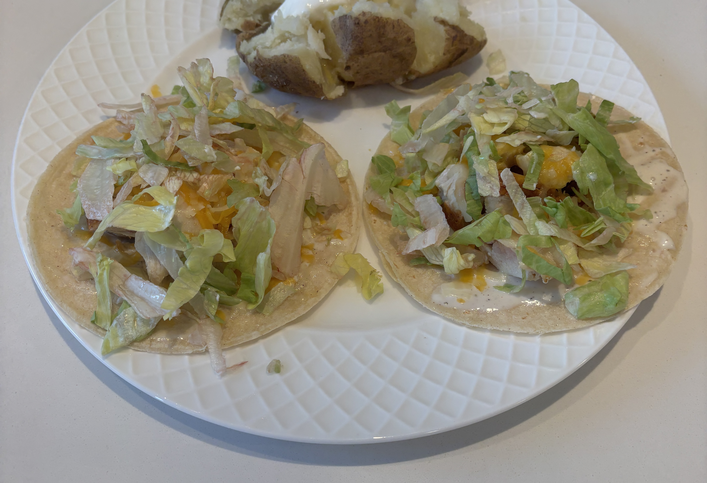

Home
Chicken and Ranch Wrap

Ingredients
- Boneless Skinless Chicken Breasts
- Vegetable oil
- Salt and pepper
- White corn tortillas
- Shredded colby jack cheese
- Ranch
- Shredded lettuce
Steps
- If the chicken is thick cut it thinner or pound flatter. Pat the chicken dry then add salt and pepper to it
- Heat a skillet with vegetable oil to medium heat, once warm place the chicken in the skillet laying it away from you
- Leave the chicken over the oil for about 5-7 min each side until the internal temp is 155 so that carry over cooking makes it safe
- Let the chicken rest for 10-20 min until cutting it into cubes.
- Wrap the tortillas in a damp paper towel and microwave for 30 sec.
- Spread ranch, the cut up chicken, and sprinkle cheese. (microwave if you want the cheese melty), add lettuce on top and serve